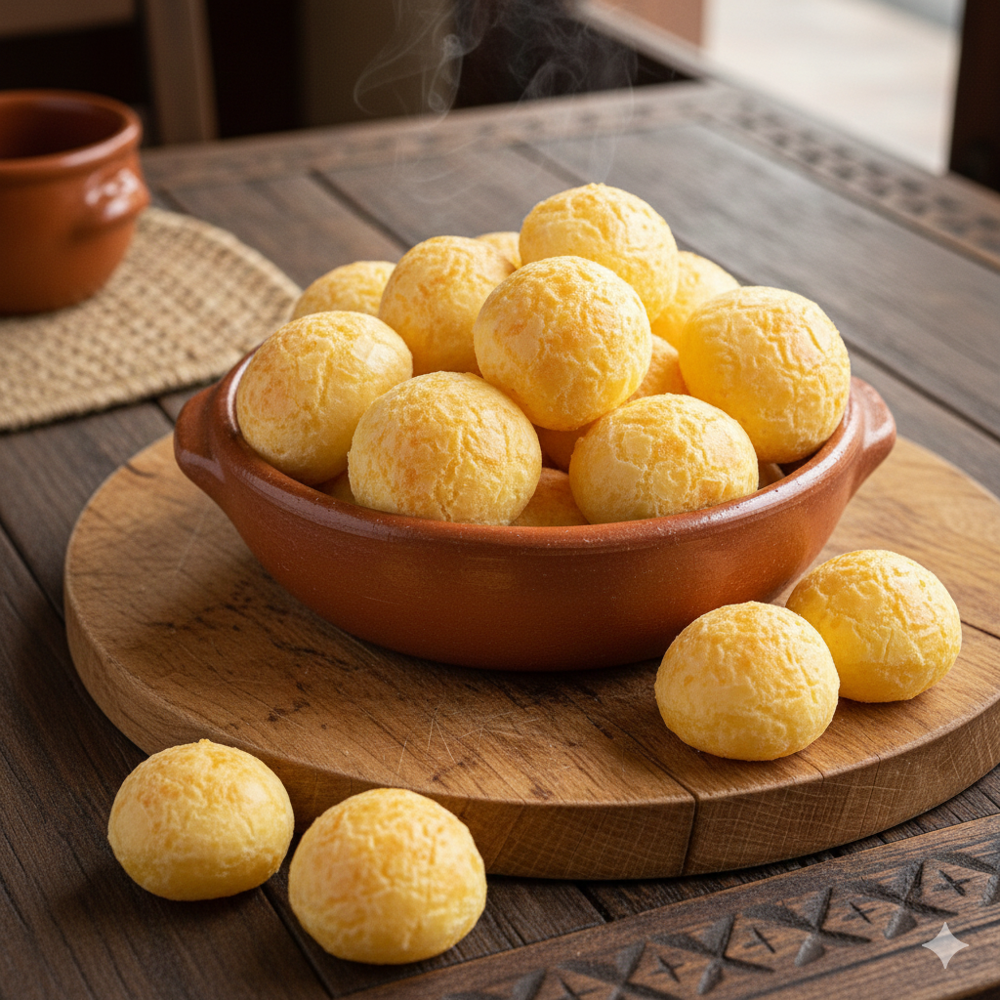

Home

Pão de Queijo (Brazilian cheese bread)
Description
Pão de queijo is a traditional Brazilian snack made with tapioca flour and cheese. Crispy on the outside and soft and chewy on the inside, it is naturally gluten-free and commonly enjoyed for breakfast or as an afternoon snack in Brazil.
Ingredients
- 250 g (2 cups) tapioca flour (polvilho azedo or polvilho doce)
- 240 ml (1 cup) milk
- 60 ml (1/4 cup) vegetable oil
- 1 tsp salt
- 2 large eggs
- 200 g (2 cups) grated cheese (minas cheese, parmesan, or a mix)
Instructions
- In a saucepan, heat the milk, oil, and salt until just boiling.
- Place the tapioca flour in a bowl. Pour the hot liquid over it and mix well until combined. Let it cool slightly.
- Add the eggs one at a time, mixing until smoth. Stir in the grated cheese until you get a sticky dough.
- With lightly oiled hands, shape small balls and place them on a baking tray lined with parchment paper.
- Bake in a preheated oven at 180 °C / 350 °F for 20-25 minutes, until puffed and lightly golden
Serving suggestions
- Warm and fresh
- With coffee
- As breakfast or quick snack
From your friend in Brazil, enjoy the feijoada!